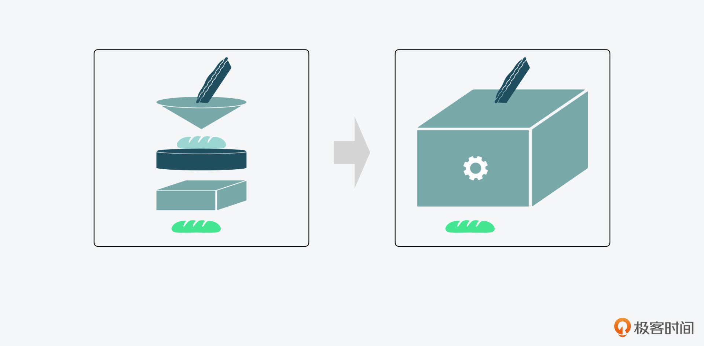
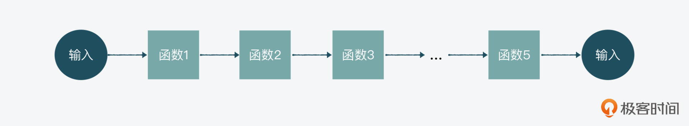
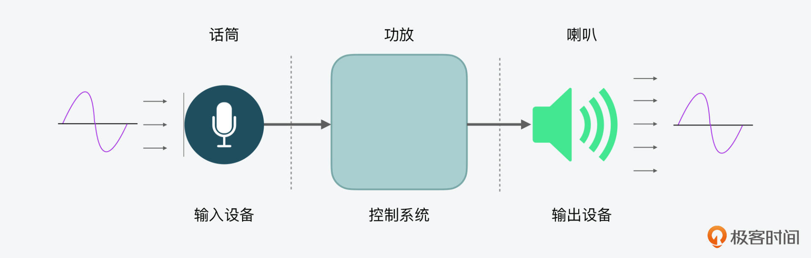
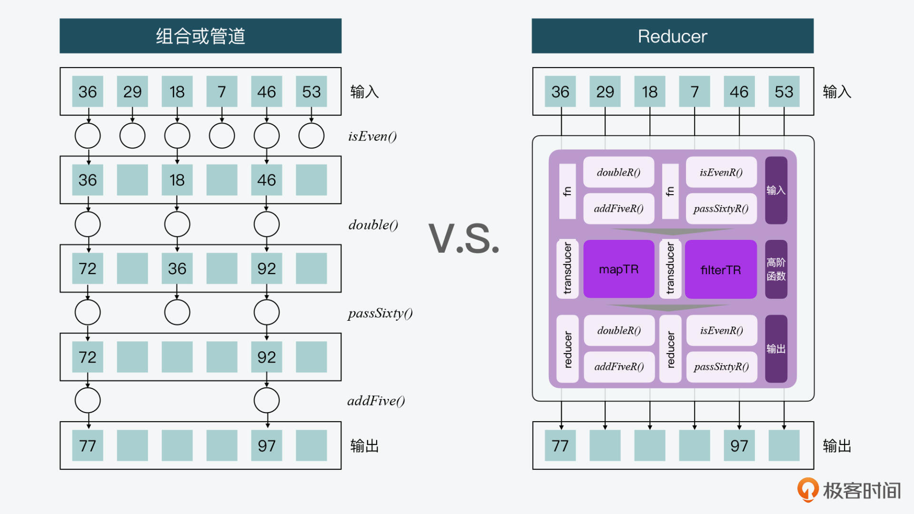
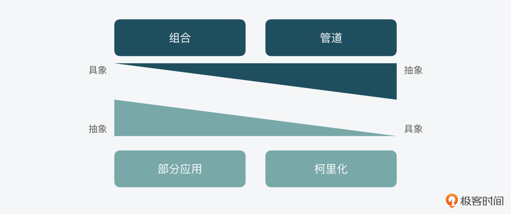

- 00 开篇词 JavaScript的进阶之路.md
- 01 函数式vs.面向对象：响应未知和不确定.md
- 02 如何通过闭包对象管理程序中状态的变化？.md
- 03 如何通过部分应用和柯里化让函数具象化？.md
- 04 如何通过组合、管道和reducer让函数抽象化？.md
- 05 map、reduce和monad如何围绕值进行操作？.md
- 06 如何通过模块化、异步和观察做到动态加载？.md
- 07 深入理解对象的私有和静态属性.md
- 08 深入理解继承、Delegation和组合.md
- 09 面向对象：通过词法作用域和调用点理解this绑定.md
- 10 JS有哪8种数据类型，你需要注意什么？.md
- 11 通过JS引擎的堆栈了解闭包原理.md
- 12 JS语义分析该用迭代还是递归？.md
- 13 JS引擎如何实现数组的稳定排序？.md
- 14 通过SparkPlug深入了解调用栈.md
- 15 如何通过哈希查找JS对象内存地址？.md
- 16 为什么环形队列适合做Node数据流缓存？.md
- 17 如何通过链表做LRU_LFU缓存？.md
- 18 TurboFan如何用图做JS编译优化？.md
- 19 通过树和图看如何在无序中找到路径和秩序.md
- 20 算法思想：JS中分治、贪心、回溯和动态规划.md
- 21 创建型：为什么说Redux可以替代单例状态管理.md
- 22 结构型：Vue.js如何通过代理实现响应式编程.md
- 23 结构型：通过jQuery看结构型模式.md
- 24 行为型：通过观察者、迭代器模式看JS异步回调.md
- 25 行为型：模版、策略和状态模式有什么区别？.md
- 26 特殊型：前端有哪些处理加载和渲染的特殊“模式”？.md
- 27 性能：如何理解JavaScript中的并行、并发？（上）.md
- 28 性能：如何理解JavaScript中的并行、并发？（下）.md
- 29 性能：通过Orinoco、Jank Busters看垃圾回收.md
- 30 网络：从HTTP_1到HTTP_3，你都需要了解什么？.md
- 31 安全：JS代码和程序都需要注意哪些安全问题？.md
- 32 测试（一）：开发到重构中的测试.md
- 33 测试（二）：功能性测试.md
- 34 测试（三）：非功能性测试.md
- 35 静态类型检查：ESLint语法规则和代码风格的检查.md
- 36 Flow：通过Flow类看JS的类型检查.md
- 37 包管理和分发：通过NPM做包的管理和分发.md
- 38 编译和打包：通过Webpack、Babel做编译和打包.md
- 39 语法扩展：通过JSX来做语法扩展.md
- 40 Polyfill：通过Polyfill让浏览器提供原生支持.md
- 41 微前端：从MVC贫血模式到DDD充血模式.md
- 42 大前端：通过一云多端搭建跨PC_移动的平台应用.md
- 43 元编程：通过Proxies和Reflect赋能元编程.md
- 结束语 JavaScript的未来之路：源于一个以终为始的初心.md
04 如何通过组合、管道和reducer让函数抽象化？
你好，我是石川。
上节课我们讲到，通过部分应用和柯里化，我们做到了从抽象到具象化。那么，今天我们要讲的组合和管道，就是反过来帮助我们把函数从具象化变到抽象化的过程。它相当于是系统化地把不同的组件函数，封装在了只有一个入口和出口的函数当中。
其实，我们在上节课讲处理函数输入问题的时候，在介绍unary的相关例子中，已经看到了组合的雏形。在函数式编程里，组合（Composition）的概念就是把组件函数组合起来，形成一个新的函数。

我们可以先来看个简单的组合函数例子，比如要创建一个“判断一个数是否为奇数”的isOdd函数，可以先写一个“计算目标数值除以2的余数”的函数，然后再写一个“看结果是不是等于1”的函数。这样，isOdd函数就是建立在两个组件函数的基础上。
var isOdd = compose(equalsToOne, remainderOfTwo);
不过，你会看到这个组合的顺序是反直觉的，因为如果按照正常的顺序，应该是先把remainderByTwo放在前面来计算余数，然后再执行后面的equalsToOne， 看结果是不是等于1。
那么，这里为什么会有一个反直觉的设计呢？今天这节课，我们就通过回答这个问题，来看看组合和管道要如何做到抽象化，而reducer又是如何在一系列的操作中，提高针对值的处理性能的。
组合Compose
在讲组合前，我想先带你来看看Point-Free和函数组件。这里，我们还是用刚刚提到的“判断一个值是不是奇数”的isOdd函数，来一步步看下它的实现。
Point-Free
那么首先，什么是Point-Free呢？实际上，Point-Pree是函数式编程中的一种编程风格，其中的Point是指参数，free是指没有。加在一起，Point-Free的意思就是没有参数的函数。
而这样做的目的是什么呢？其实通过这种方式，就可以将一个函数和另外一个函数结合起来，形成一个新函数。比如，为了要创建isOdd函数，通过这种方式，我们就可以把这两个函数“组合”在一起，得到isOdd。
var isOdd = (x) => equalsToOne(remainderOfTwo(x));
函数组件
接着，我们再来看函数组件。
在以下的代码示例当中，我们先定义了两个函数：第一个是dividedBy，它的作用是计算x除以y的余数；第二个是equalsTo，它是用来看余数是否等于1。
这两个函数其实就是我们用到的组件函数。你可以发现，这两个组件的特点都是努力专注做好一件小事。
var dividedBy = (y) => {
return function forX(x) {
return x % y;
}
}
var equalsTo = (y) => {
return function forX(x) {
return x === y;
}
}
然后，在dividedBy和equalsToOne的基础上，我们就可以创建两个Point-Free的函数，remainderOfTwo和equalsToOne。
var remainderOfTwo = dividedBy(2);
var equalsToOne = equalsTo(1);
最后，我们只需要传入参数 x，就可以计算相应的isOdd的结果了。
var isOdd = (x) => equalsToOne(remainderOfTwo(x));
好了，现在我们知道了，函数是可以通过写成组件来应用的。这里其实就是用到了函数式编程声明式的思想，equalsToOne和remainderByTwo，不仅把过程进行了封装，而且把参数也去掉了，暴露给使用者的就是功能本身。所以，我们只需要把这两个函数组件的功能结合起来，就可以实现isOdd函数了。
独立的组合函数
下面我们再来看看独立的组合函数。
其实从上面的例子里，我们已经看到了组合的影子。那么更进一步地，我们就可以把组合抽象成一个独立的函数，如下所示：
function compose(...fns) {
return fns.reverse().reduce( function reducer(fn1,fn2){
return function composed(...args){
return fn2( fn1( ...args ) );
};
} );
}
也就是说，基于这里抽象出来的compose功能，我们可以把之前的组件函数组合起来。
var isOdd = compose(equalsToOne, remainderOfTwo);
所以，回到课程一开始提到的问题：为什么组合是反直觉的？因为它是按照传参顺序来排列的。
前面讲的这个组合，其实就是 equalsToOne(remainderOfTwo(x))。在数学中，组合写成 fog，意思就是一个函数接收一个参数x，并返回成一个 f(g(x))。
好，不过看到这里，你可能还是觉得，即使自己理解了它的概念，但是仍然觉得它反直觉，因此想要一种更直观的顺序来完成一系列操作。这个也有相应的解决方案，那就是用函数式编程中的管道。
管道Pipeline
函数式编程中的管道，是另外一种函数的创建方式。这样创建出来的函数的特点是：一个函数的输出会作为下一个函数的输入，然后按顺序执行。
所以，管道就是以组合反过来的方式来处理的。
Unix/Linux中的管道
其实管道的概念最早是源于Unix/Linux，这个概念的创始人道格拉斯·麦克罗伊（Douglas McIlroy）在贝尔实验室的文章中，曾经提到过两个很重要的点：
- 一是让每个程序只专注做好一件事。如果有其它新的任务，那么应该重新构建，而不是通过添加新功能使旧程序复杂化。
- 二是让每个程序的输出，可以成为另一个程序的输入。
感兴趣的话你也可以读一下这篇杂志文章，虽然这是1978年的文章，但是它的设计思想到现在都不算过时。

好，那么现在，我们就来看一个简单的管道例子，在这个例子里，我们可以找到当前目录下面所有的JavaScript文件。
$ ls -1 | grep "js$" | wc -l
你能发现，这个管道有竖线“ | ”隔开的三个部分。第一个部分 ls -1，列出并返回了当前目录下所有的文件，这个结果作为了第二步 grep "js$" 的输入；第二个部分会过滤出所有的以 js 结尾的文件；然后第二步的结果会作为第三部分的输入，在第三步，我们会看到最后计算的结果。
JavaScript中的管道
回到JavaScript中，我们也可以用isOdd的例子，来看看同样的功能要如何通过管道来实现。
其实也很简单，我们只需要通过一个reverseArgs函数，将compose中接收参数的顺序反过来即可。
你可能会想到我们在上节课讲unary的时候，是把函数的输入参数减少到1，而这里是把参数做倒序处理，生成一个新的函数。在函数式编程中，这算是一个比较经典的高阶函数的例子。
function reverseArgs(fn) {
return function argsReversed(...args){
return fn( ...args.reverse() );
};
}
var pipe = reverseArgs( compose );
然后我们可以测试下管道是否“畅通”。这次，我们把remainderOfTwo和equalsToOne按照比较直观的方式进行排序。
可以看到，isOdd(1)返回的结果是true，isOdd(2)返回的结果是false，和我们预期的结果是一样的。
const isOdd = pipe(remainderOfTwo, equalsToOne);
isOdd(1); // 返回 true
isOdd(2); // 返回 false
Transduction
讲完了组合和管道之后，还有一个地方想再跟你强调下。
我一再说过，函数式编程中的很多概念，都来自于对复杂、动力系统研究与控制等领域。而通过组合和管道，我们可以再延伸来看一下转导（transducing）。
转导主要用于控制系统（Control System），比如声波作为输入，通过麦克风进入到一个功放，然后功放进行能量转换，最后通过喇叭传出声音的这样一个系统，就可以成为转导。

当然，单独看这个词，你或许并没有什么印象，但是如果说React.js，你应该知道这是一个很著名的前端框架。在这里面的reducer的概念，就用到了transducing。
在后面的课程中，我们讲到响应式编程和观察者模式的时候，还会更深入了解reducer。这里，我们就先来看看transduce和reducer的作用以及原理。
那么，reducer是做什么用的呢？它最主要的作用其实是解决在使用多个map、filter、reduce操作大型数组时，可能会发生的性能问题。
而通过使用transducer和reducer，我们就可以优化一系列map、filter、reduce操作，使得输入数组只被处理一次并直接产生输出结果，而不需要创建任何中间数组。
可能我这么讲，你还是不太好理解，这里我们先来举一个不用tansducer或reducer例子吧。
var oldArray = [36, 29, 18, 7, 46, 53];
var newArray = oldArray
.filter(isEven)
.map(double)
.filter(passSixty)
.map(addFive);
console.log (newArray); // 返回：[77,97]
在这个例子里，我们对一组数组进行了一系列的操作，先是筛选出奇数，再乘以二，之后筛出大于六十的值，最后加上五。在这个过程中，会不断生成中间数组。
这个实际发生的过程如下图左半部分所示。

而如果使用reducer的话，我们对每个值只需要操作一次，就可产出最终的结果。如上图的右半部分所示。
那么它是如何实现的呢？在这里，我们是先将一个函数，比如isEven作为输入，放到了一个transducer里，然后作为输出，我们得到的是一个isEvenR的reducer函数。
是的，这里的transducer其实也是一个经典的高阶函数（即输入一个函数，得到一个新的函数）的例子！
实际上，像 double和addFive都具有映射类的功能，所以我们可以通过一个类似mapReducer这样的一个transducer，来把它们转换成reducer。而像 isEven和passSixty都是筛选类的功能，所以我们可以通过一个类似filterReducer这样的一个transducer，来把它们转换成 reducer。
如果我们抽象化来看，其代码大致如下。它的具体实现这里我卖个关子，你可以先自己思考下，我们下节课再探讨。
var oldArray = [36, 29, 18, 7, 46, 53];
var newArray = composeReducer(oldArray, [
filterTR(isEven),
mapTR(double),
filterTR(passSixty),
mapTR(addFive),
]);
console.log (newArray); // 返回：[77,97]
总而言之，从上面的例子中，我们可以看出来composeReducer用的就是一个类似组合的功能。
总结
这节课通过对组合和管道的了解，相信你可以看出来，它们和上节课我们讲到的部分应用和柯里化正好相反，一个是从具象走向抽象，一个是从抽象走向具象。
不过，虽然说它们的方向是相反的，但有一条原则是一致的，那就是每个函数尽量有一个单一职责，只专注做好一件事。
值得注意的是，这里的方向不同，并不是指我们要用抽象取代具象，或者是用具象取代抽象。而是说它们都是为了单一职责函数的原则，相辅相成地去具象化或抽象化。

另外，通过reducer的例子，我们也知道了如何通过reducer的组合，做到普通的组合达不到的性能提升。
在这节课里，我们是先从一个抽象层面理解了reducer，不过你可能仍然对map、filter、reduce等概念和具体实现感到有些陌生。不用担心，下节课我就带你来进一步了解这一系列针对值的操作工具的机制，以及functor和monad。
思考题
我们讲到reduce可以用来实现map和filter ，那么你知道这背后的原理吗？欢迎在留言区分享你的答案，或者你如果对此并不十分了解，也希望你能找找资料，作为下节课的预习内容。
当然，你也可以在评论区交流下自己的疑问，我们一起讨论、共同进步。
© 2019 - 2023 Liangliang Lee. Powered by gin and hexo-theme-book.